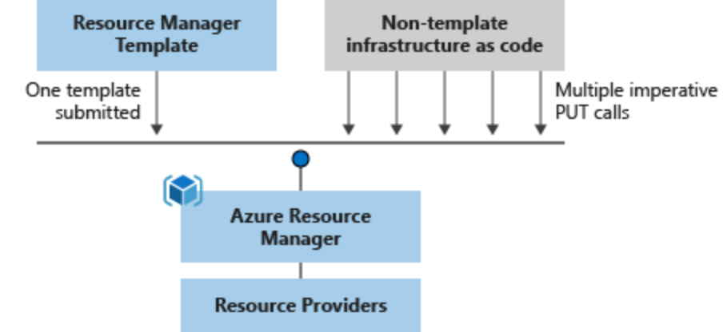

Azure Setup¶
The Blacksmith project leverages Microsoft Azure to host and manage the infrastructure that is created through the ARM templates provided. Also, it uses Microsoft Azure Resource Manager (ARM) templates to describe and provision all the infrastructure resources in Azure.
Azure Resource Manager¶
Azure Resource Manager is the deployment and management service for Azure. It provides a management layer that enables you to create, update, and delete resources in your Azure subscription. You use management features, like access control, locks, and tags, to secure and organize your resources after deployment.

ARM Templates¶
To implement infrastructure as code for your Azure solutions, use Azure Resource Manager templates. The template is a JavaScript Object Notation (JSON) file that defines the infrastructure and configuration for your project. The template uses declarative syntax, which lets you state what you intend to deploy without having to write the sequence of programming commands to create it. In the template, you specify the resources to deploy and the properties for those resources.
{kind=link}
Azure Free Account¶
The Azure free account includes free access to popular Azure products for 12 months, $200 USD credit to spend for the first 30 days, and access to more than 25 products that are always free. This is an excellent way for new users to get started and explore. To sign up, you need a phone number, a credit card, and a Microsoft or GitHub account. Credit card information is used for identity verification only. You won’t be charged for any services until you upgrade.
When your Free Tier expires, Azure starts charging the regular rates for any not “always-free” services and resources that you’re using.
To avoid charges while on the Free Tier, you must keep your usage below the Free Tier limits. You are charged for any usage that exceeds the limits. To help you stay within the limits, you can track your Free Tier usage and set a billing alarm to notify you if you start incurring charges.
Remember that you are charged ONLY for the services that you use.
The first step to using Azure is to sign up. You may sign up directly through Azure.com, with the help of a Microsoft representative, or through a partner. If you’re new to Azure, you may sign up for an Azure free account to start exploring with $200 USD free credit and free services.
Learn about Azure Free Account: https://azure.microsoft.com/en-us/free/
Follow these instructions to create an account: https://docs.microsoft.com/en-us/learn/modules/create-an-azure-account/.
Azure CLI¶
The Azure command-line interface (CLI) is Microsoft’s cross-platform command-line experience for managing Azure resources. The Azure CLI is available to install in Windows, maxOS and Linux environments. It can also be run in a Docker container and Azure Cloud Shell.
P2S VPN Certificate¶
Almost every Azure environment developed under the Blacksmith’s initiative uses a Point-To-Site (P2S) VPN to secure every resource deployed, avoid direct communication from the outside, and enable client certificate authentication at a gateway level.